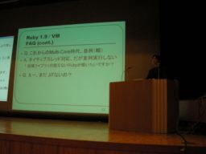

Ruby 1.9実装の現状と今後 （ささだ こういち）
- スピーカー
- ささだ こういち - 日本Rubyの会
- プロフィール
- 日本Rubyの会理事。Rubyist Magazine編集。Rubyのおかげで就職できました。多分。趣味は最適化。
- 講演時間
- 10：10〜10：35
- 講演者による資料
- http://www.atdot.net/yarv/RK2007-sasada-public.pdf
- http://www.atdot.net/yarv/RK2007-sasada-public.ppt
今日はスーツ姿のささださん。スーツ姿が似合っていてかこいいです。
はじめに
- Ruby1.9は鋭意開発中です。
- Ruby1.9は今年の12月にでます。
今日の発表内容
- Ruby1.9の紹介
- おもにバーチャルマシン
- Ruby1.9の現状
今日の発表について
- 諸事情により漢字名前で出ています
- お仕事でRubyの開発しています
- NoRuby, NoLife(NoMoney)
お仕事の一環なので漢字の名前で出ているそうです。 Rubyの開発をお仕事にしているのでRubyがないとお金がもらえません；；とのこと
今日の挑戦
- WindowsVistaでMicrosoft PowerPoint
- 首をしめてプレゼン（ネクタイ）
今日の発表もお仕事の一環で来ています。なのでスーツ＆ネクタイ。 ちなみに今日はネクタイの人は自分一人であることが目標だったけど、会場にネクタイのひといますか？
という質問に対して、会場にほかにネクタイの人がいたようです。残念。
でも、ささださんネクタイ姿似合ってますよ＾＾
Ruby1.9の紹介
- バーチャルマシン
- 文法の変更
- M17N
- その他「ぎゃっ」と言わせる変更（おもにまつもとさん）文句はまつもとさんまでｗｗ
ほか・・・
ささださんはまつもとさんの暴走を抑えるのに苦労してるみたいです。発表の随所にぽろぽろと…
バーチャルマシンの導入
- 構文木解析→コンパイル
- 2007年1月1日導入
1.8以前
- 構文木をそのまま実行ー＞遅い
1.9VM
- コンパイルして実行ー＞早い
- JITコンパイラとか・・・
いろんな最適化をしてます
- 末尾呼び出しの最適化
- たぶんもっとも高速な処理系
ネイティブスレッド対応
- POSIX Thread/Windows
- グローバルVMロックを用いた逐次実行
新しいデバッガ・プロファイラAPI
- 詳細は略
- だいたい実装したよ！
ここで、パワポのスライドがいっぱい並んでいるのを見せて、 いろいろやってますという雰囲気だけ見せて詳細は省略
FAQ
- Q
- YARV?
- A
- Yet Another Ruby VMの略はもう忘れて（1.9では、もうYet Anotherでなくなるよ）
- Q
- TRV?
- A
- The RubyVMの略？俺がいいだしたのか？
- Q
- 並列化？
- A
- ネイティブスレッド対応だが、並列実行しない
拡張ライブラリが使えなくなる→スレッドセーフでない
- Q
- えー、まだJITないの？
- A
- JITに夢持ちすぎAOTを（Ruby To C)予定
- Q
- クラスファイルみたいなものは？
- A
- あまり需要がないみたい
IPAの未踏の支援
- 2004年度未踏ユース
- 2005年度上期未踏
- 2006年度下期未踏
「Ruby用仮想マシンYARVの完成度向上」 ささだの９５％は皆様の税金で出来ています（笑）
継続かわいいよ継続
- Continyution/callccのサポート
- つい出来心で
- 結局だれも使わない
Fiberかこいい
- 新機能・Non preemptive thread
- 自動的に処理が切り替わらないスレッド
- Generatorを作るのが目的
- オーバースペック気味？
- ほかに応用？
- 状態遷移機械？
Fiber Puzzle
f1 = f2 = f3 = nil; fr = Fiber.current
f1 = Fiber.new{f2.yield; fr.yield}
f2 = Fiber.new{f3.yield
ここまで書いたんだけど、
わからなければスルーということなのでスルー＾＾
継続とFiber
- 知らないひとはしらない
- 継続かわいいよ継続派
- 作るのやめようかなあ派
- Fiberだけでもー＞Fiberだけでもオーバースペック
- 本人はやめたい？
なんかいろいろ迷いがあるようです。
ここで笑い
IRCから
- バグをなくせばいいんじゃないか派
- Rubyをなくせばいいんじゃないか派
こんなエントリが！！！！
開発方針
- 2007年12月にリリース！by Matz
- 開発合宿などで1.9の方針決定
- 開発合宿やりました
- 昨日、一昨日
- あまりやったことないのでよかった、（やどはべつだったけどねｗ）
- あと数回はやりたいね by Matz（ささださんも同意）
ここで開発合宿風景の写真が紹介されました。
あるいは仕様変更とのあくなき戦い
ささだ「その仕様知らない。初めて見たかも」
まつもと「言ってないかも」
ｗｗｗｗ
1.9.1 2007年12月25日リリース
- ちょっと品質悪くてもリリース
- 出来る限りがんばる
- 誰もバグがないなんて思ってない？
Ruby処理系開発で得をすること
- フェローになれた
- 就職できた
- Ruby処理系開発者を雇ったのはSunだけじゃない
まとめ
- 開発は粛々とすすんでいます。
- 十中八九2007年12月にリリースします
質疑応答
- Q
- マルチVMはどうなった？
- A
- 1.9では出さない。Additionalな実装として出す。もっとあとのバージョンで出す。
- Q
- 95%は税金ということだけど残りの5%は？
- A
- 皆様の愛ということで
- IRC
- 麦チョコなど（業務用）
- Q
- 最適化という言葉は何に対しての最適化をさしているのか？以前に記号処理を早くするといっていたけどそのこと？
- A
- 実行時間が短くなることを目指している。
- Q
- どんな場面で？
- A
- いままで遅かった数値計算などが早くなるとよい。メソッド呼び出し、iteratorなど早くなれば、すべての処理に影響がある。ジェネラルに早くなることを主眼にしている。
(ロガー：よう)


Keyword(s):
References:[RubyKaigi2007速報ログ]